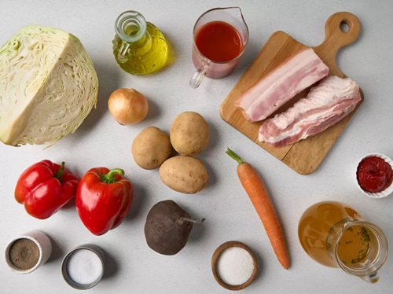
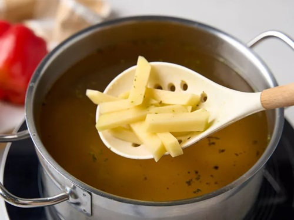
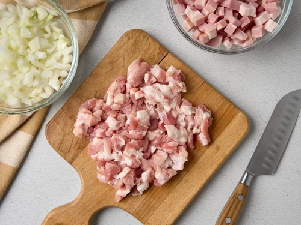
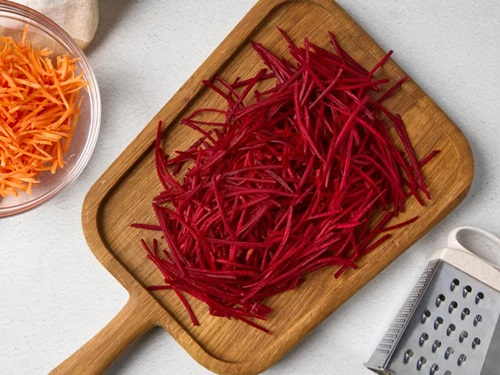
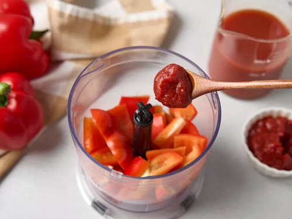
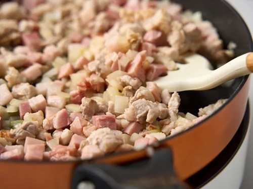
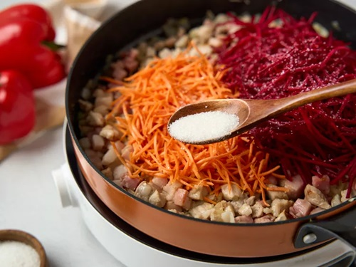
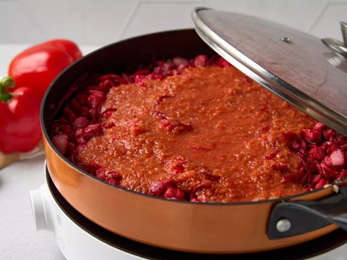

|
|
супы салаты гарниры десерты мои рецепты |
Казачий борщКазачий борщ подают не только со сметаной, но и кладут в него измельченный чеснок непосредственно при подаче. Он хорошо подчеркивает вкус копченой грудинки, которая часто становится ингредиентом этого супа наряду со свиной рулькой. Привычный картофель можно заменить брюквой или редькой. А капусту в борщ по-казачьи режут крупнее, чем в обычный. Овощную зажарку потушите отдельно, добавив густую заправку на основе томатной пасты и сока с измельченным сладким перцем. Ингредиенты
ПриготовлениеПодготовкаПомойте и почистите свеклу, картофель и морковь. Помойте перцы и капусту. Снимите с капусты верхние вялые листья, а у перцев уберите плодоножки и семена. Почистите лук. Подготовьте блендер. Шаг 1Налейте бульон в кастрюлю и доведите его до кипения. Тем временем нарежьте картофель средними брусками и выложите в кипящий бульон. Оставьте вариться. Шаг 2Пока картофель варится, нарежьте небольшими кубиками оба вида грудинки и репчатый лук. Шаг 3Натрите морковь и свеклу на крупной терке. Шаг 4Для заправки положите в чашу блендера 1 сладкий перец, нарезанный крупными кусками. Добавьте томатную пасту и сок. Измельчите в однородную кашицу. Шаг 5Обжарьте лук и грудинку в раскаленном на сковороде масле в течение 5 минут. Не забывайте помешивать, чтобы продукты прожаривались равномерно. Шаг 6Добавьте к зажарке свеклу и морковь. Всыпьте сахар и, помешивая, жарьте еще 5 минут. Шаг 7Перелейте в сковороду содержимое блендера. Перемешайте, накройте посуду крышкой и потушите все вместе в течение 5 минут. Шаг 8 |
| © рецепты без лишних слов |